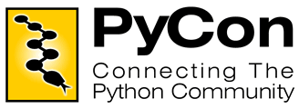

|  | |
|
The international community for the Python programming language holds several conferences each year (listed alphabetically):
Events with a more regional focus:
Many of these circulate between different sites and most rely upon volunteers from the community to make them happen. These Python conferences bring together developers, application designers and business people in the international Python communities. You will meet people who have just begun their journey into this world, as well as the people who started it all. You can expect to to enjoy inspirational talks and a friendly atmosphere, designed to help people build contacts and learn from each others' experiences. You will meet interesting people and have a pleasant time. Python Events and User Group Calendar
Please note that the above calendar widget uses UTC/GMT as timezone. The calendars are also available as iCal file ( Python Events iCal Calendar, Python User Group iCal Calendar ) or RSS feed ( Python Events RSS Feed, Python User Group RSS Feed ). Also see the Conferences and Workshops page on www.python.org, the main Python website, for more information. If you have an event to add to the calendars, please see our calendar wiki page for details. If you have a conference to add to this page, please write to webmaster-at-pycon-dot-org or conferences-at-python-dot-org. If you are organizing a Python conference or are thinking of organizing one, please consider subscribing to the Python conferences mailing list. Python ConferencesPyCon 2016 will be held in Portland, Oregon, USA, from May 28 - June 5. PyCon 2015 and 2014 were held in Montreal, Canada. PyCon 2013 was held in Santa Clara, California, USA, with 2500 attendees. PyCon 2012 in Santa Clara also was a great success with over 2300 people attending. PyCon 2010 and 2011 were in Atlanta, Georgia, USA, with over 1400 people attending 2011. PyCon 2008 & 2009 were in Chicago, Illinois. Over 900 people attended in 2009, and over 1000 in 2008. PyCon 2006 & 2007 were held in Dallas, Texas. Washington DC hosted PyCon 2003, 2004, & 2005. EuroPython 2016 will be held again in Bilbao, Spain. EuroPython started in Charleroi, Belgium, in 2002 and 2003, moved on to Gothenburg, Sweden, for 2004 and 2005, was held at CERN in Swizerland in 2006, and then moved to Vilnius, Lithuania in 2007 & 2008. EuroPython 2009 and 2010 were in Birmingham, UK. EuroPython 2011, 2012 and 2013 were held in Florence, Italy. EuroPython 2014 was held in Berlin, Germany. EuroPython 2015 was held in Bilbao, Spain, from July 20 - 26. EuroPython was the first major Python conference entirely organized by volunteers from the community. PyCon Isreal 2016 will be held for the first time in Tel Aviv, from May 2-3. PyCon CZ 2015 (Czech Republic) will be held for the first time in Brno, from November 14-15. PyCon PL 2015 (Poland) will be held at the Hotel Ossa Congress & Spa from October 15-18. PyCon PL 2012 was held in Maslow from September 12-16. The first edition of the PyCon PL conference was held in Rybnik on October 18 & 19, 2008. PyCon PL 2009 was in Ustron, October 16-18 2009. PyCon UK 2015 will again be held in Coventry, UK, from September 18-21. PyCon UK held its first conference on September 8-9, 2007 at the Birmingham Conservatoire. PyCon UK 2008 was also held in Birmingham. In 2009 and 2010 the team organized the EuroPython conferences and in 2011 PyCon UK moved to Coventry, UK, and has been run there in the years 2012 - 2014. PyCon HK 2015 (Hong Kong) will be held at Hong Kong Cyberport on November 7th for the first time. PyCon MY 2015 (Malaysia) will be held at the University of Malaya from August 21-23. PyCon LT 2015 (Lithuania) will be held in Vilnius, Lithuania, on April 25th. Python Namibia 2015 was held at the University of Namibia in Windhoek, from February 2-5 for the first time. PyCon Korea 2014 was held for the first time on August 30 in Seoul, Korea. PyCon Ireland 2014 was held from Oct 11-14 in Dublin, Ireland. PyCon Ireland was started in Dublin in 2010 and has since been a yearly event. PyCon DE 2014 was held as track of the EuroPython 2014 conference in Berlin. PyCon DE 2013 was held in Cologne, Germany, Oct 29 - Nov 3. The first two PyCon DEs were held in Leipzig, Germany, in 2011 and 2012. PyCon Finland 2014 was held in Helsinki, on October 27. PyCon Finland 2013 was held in Otaniemi, Espoo, outside Helsinki city, from October 21-22. PyCon Sweden 2014 was held for the first time in Stockholm, Sweden, from May 20-21. PyCon APAC 2014 was held in Taipei, Taiwan, from May 17-18. In 2013 was held in Tokyo, Japan. Singapore held PyCon APAC 2010, 2011, and 2012, and was where it started. PyCon PH 2014 was held in Manila, Philippines, from February 22-23. PyCon Philippines started in 2012 in Manila. PyCon PH 2012 was held from June 30 to July 1, organized by the Philippine Python User Group. The first PyCon MY 2014 was held in Kuala Lumpur, Malaysia, on March 15. The first PyCon ES 2013 was held in Madrid, Spain, from November 23-24. PyCon FR 2013 was held in Strasbourg, France, from October 26-29. PyCon FR 2012 was be held in Paris, France, from September 13-16. EuroSciPy 2013 was be held in Brussels, Belgium from August 21 to August 24. PyCon Canada 2013 was held in Toronto, Canada, from August 9 to 13. The first PyCon Canada was held in Toronto, Canada, in 2012. Kiwi PyCon 2013 was held at Auckland University of Technology, New Zealand, from September 6 to 8. Kiwi PyCon 2010 took take place on November 20 & 21 in Waitangi, New Zealand. PyCon Russia 2013 was held in Yekaterinburg, Russia, from February 9-10. PythonBrasil 2016 will be held in Florianopolis, Santa Catarina. Previous editions of PythonBrasil were held in Sao Jose dos Campos (2015), Porto de Galinhas (2014), Brasilia (2013), Rio de Janeiro (2012), Sao Paulo (2011), Curitiba (2010), Caxias do Sul (2009), Rio de Janeiro (2008), Joinville (2007), Brasilia (2006) and Campinas (2005). PyCon Singapore 2013 was held in Singapore from June 13-15. PyCon Venezuela 2012 was held in Caracas, Venezuela, from November 1-3. PyCon Uruguay 2012 was held in Montevideo, Uruguay, from November 10-11. PyCon China 2011 was held in Shanghai, China, on December 3rd and 4th 2011. This was the first PyCon in China, with an expected number of 300 attendees. PyCon Taiwan 2012 was held in the Academia Sinica, Taipei, Taiwan, on June 9th and 10th. PyCon JP 2011 was held in Tokyo, on August 27. PyCon Argentina 2009 was held in Buenos Aires, on September 4th and 5th. Pycon India 2009 was held in Bangalore, India, on Saturday, 26th September and Sunday, 27th September. |